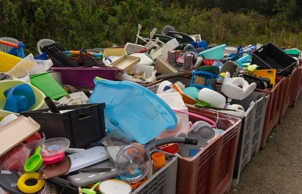

Guía básica
Los 5 tipos de residuos que debes conocer
Clasifica correctamente tus residuos desde casa y aprende a diferenciar los materiales que se reciclan, reutilizan o desechan de forma segura.
- Plásticos: botellas, envases y empaques limpios.
- Vidrios: frascos, botellas y espejos sin restos.
- Papel y cartón: cajas, periódicos y papel sin grasa.
- Orgánicos: cáscaras, restos de alimentos y hojas secas.
- Peligrosos: pilas, medicinas, aceites y electrónicos.